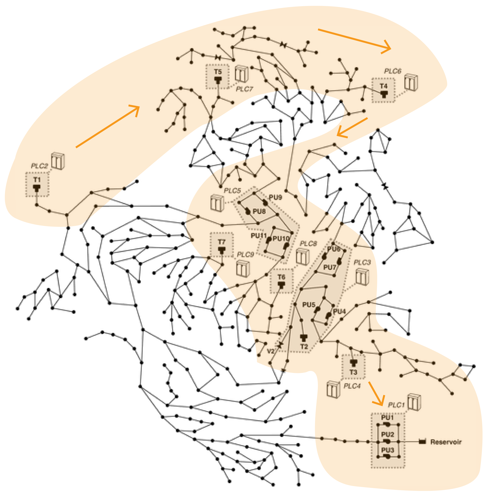

FIRST PROTOTYPE
Sonifications are built on two different layer, considering data individually. The first one, represent the network component data refears to, the second layer sounds the morphology of data. In this first apporoach we considered 3 components: tanks, pumps and valves: for tanks we have data about water level, while we know the status and the pressure for pumps and valves. Sounds order follow the components geographic position (map).

sonification
sound-key
background sound for network components:
distinct sounds for components' status
TANK STATUS:
PUMP STATUS:
VALVE STATUS:
JUNCTION STATUS: